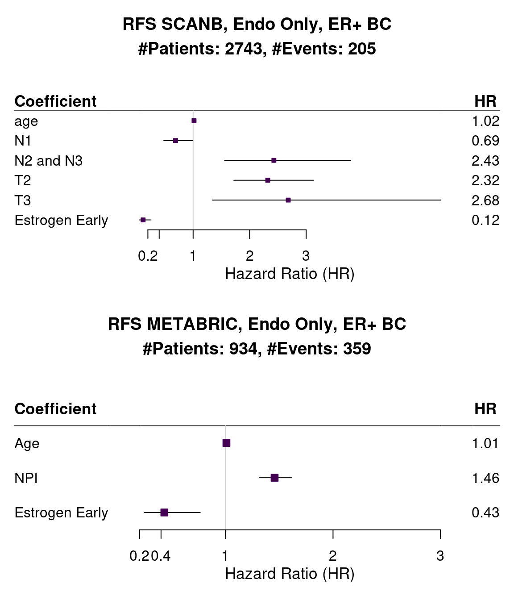
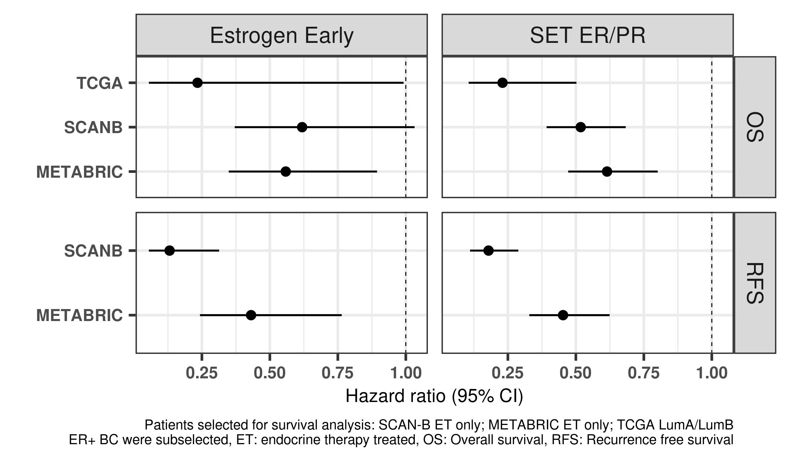
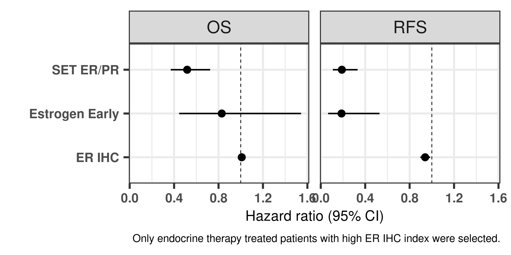
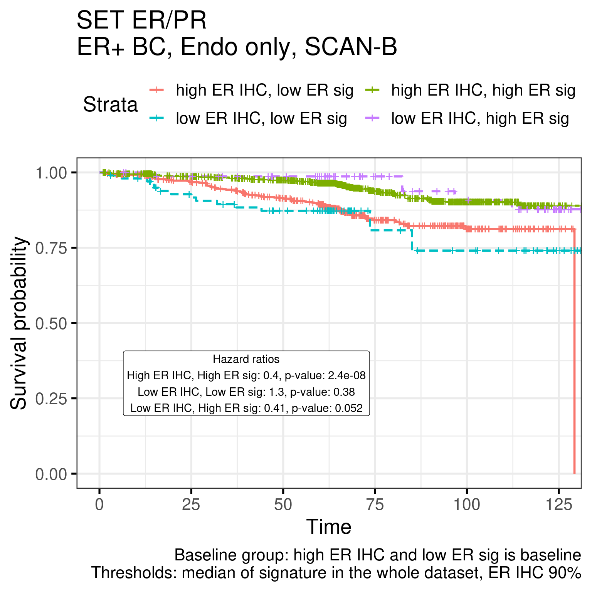
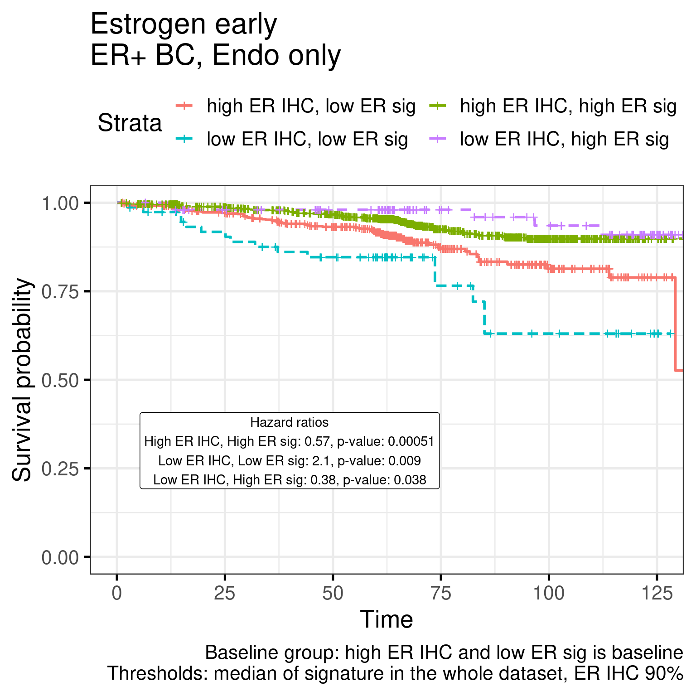

1Estrogen receptor status is continuous, not dichotomous
Currently in the clinics estrogen receptor (ER) status is treated as dichotomous condition. Either a breast cancer (BC) is ER positive (ER+) or ER negative (ER-). The threshold for ER+ cells usually is 1% or 10% of the cells positive in a IHC staining. The idea is that ER+ BC patients will receive endocrine therapy, usually tamoxifen or some aromatase inhibitor, for treatment. The problem is not all patients respond the same to these drugs and they also have different proportions of ER+ cells.
In this document we show how leveraging molecular information distinguishes ER+ BC patients and how one should look more carefully on ER status. In order to do this, estrogen related signatures: estrogen response early and late from MSigDB(Subramanian et al. 2005) and \(SET_{ER/PR}\)(Sinn et al. 2019), are used to calculate scores for each BC patient. These scores then are used to calculate associations with survival analysis. When performing cox regression, we try to adjust for sensible covariates in order to reduce bias. Even though we are adjusting, it is very difficult to know if a covariate is missing in the regression. Thus, care should be always taken when interpreting these results.
This chapter is structure in the following way. First section corresponds to loading the datasets and then filtering them. Estrogen signatures scores are calculated using GSVA (Hänzelmann, Castelo, and Guinney 2013). Given the scores, cox regression can be performed adjusting for clinical variables. After this the Hazard ratios can be computed and interpreted along with their confidence intervals.
1.1 Loading and filtering the datasets
The preprocessing of the datasets is described in the website below: > https://chronchi.github.io/transcriptomics
To check the code used here either click in the code button on the top right part of the page or check the github page (github.com/chronchi/molecular_landscape).
The TCGA, METABRIC and SCANB cohorts are used in this section here. They are the biggest cohort of Breast cancer patients in the world. Each datasets has an overall equal distribution of ER+ and ER- patients and similar age distribution.
* The library is already synchronized with the lockfile.
1.2 UMAP projection of the datasets
The plots below show how each patient is different in a molecular sense, and even inside each molecular subtype there are some differences. This indicates how different patients, at least molecularly. We only do the umap of samples that have a PAM50 molecular subtype assigned.
Figure 1.1: UMAP projections of all three cohorts in the following order”:” TCGA, SCANB and METABRIC. They are colored by the PAM50 molecular subtype.
From the plots above we see a distinction of the different molecular subtypes.
1.3 Calculating scores
In order to calculate the scores, the package msigdb is used to load the hallmark data into R. The \(SET_{ER/PR}\) is made of the following genes:
Affy
ID
is_target
202089_s_at
SLC39A6
yes
203438_at
STC2
yes
204508_s_at
CA12
yes
205225_at
ESR1
yes
205380_at
PDZK1
yes
205440_s_at
NPY1R
yes
205831_at
CD2
yes
206401_s_at
MAPT
yes
209123_at
QDPR
yes
209309_at
AZGP1
yes
209459_s_at
ABAT
yes
213245_at
ADCY1
yes
213539_at
CD3D
yes
214440_at
NAT1
yes
218398_at
MRPS30
yes
218976_at
DNAJC12
yes
219197_s_at
SCUBE2
yes
222379_at
KCNE4
yes
200650_s_at
LDHA
no
202961_s_at
ATP5J2
no
211662_s_at
VDAC2
no
201623_s_at
DARS
no
205480_s_at
UGP2
no
217750_s_at
UBE2Z
no
212175_s_at
AK2
no
212050_at
WIPF2
no
202631_s_at
APPBP2
no
202342_s_at
TRIM2
no
The first 18 genes are considered to be the target genes, the last 10 genes are the genes used for reference. According to their paper, the score is calculated in the following way:
Where \(T_i\) are the expression levels of target genes and \(R_j\) are the expression levels of the reference genes. Here we use GSVA to calculate the scores, even when using their genes.
Before we calculate any score, let us check the number of genes available for each pathway in each dataset. This is important, in other to have robust scores, most of the genes should be available in the datasets. We also add signatures of 18 and 200 random genes for control.
pathway
tcga
scanb
metabric
n
average_percentage
HALLMARK_ADIPOGENESIS
188
187
164
210
0.86
HALLMARK_ALLOGRAFT_REJECTION
141
134
139
335
0.41
HALLMARK_ANDROGEN_RESPONSE
93
92
83
102
0.88
HALLMARK_ANGIOGENESIS
30
29
28
36
0.81
HALLMARK_APICAL_JUNCTION
155
148
151
231
0.66
HALLMARK_APICAL_SURFACE
31
30
31
46
0.67
HALLMARK_APOPTOSIS
141
141
130
183
0.75
HALLMARK_BILE_ACID_METABOLISM
75
71
77
114
0.65
HALLMARK_CHOLESTEROL_HOMEOSTASIS
67
67
60
77
0.84
HALLMARK_COAGULATION
92
90
88
162
0.56
HALLMARK_COMPLEMENT
152
149
144
237
0.63
HALLMARK_DNA_REPAIR
145
144
127
170
0.82
HALLMARK_E2F_TARGETS
196
179
174
218
0.84
HALLMARK_EPITHELIAL_MESENCHYMAL_TRANSITION
179
172
172
204
0.85
HALLMARK_ESTROGEN_RESPONSE_EARLY
189
176
162
216
0.81
HALLMARK_ESTROGEN_RESPONSE_LATE
176
162
162
218
0.76
HALLMARK_FATTY_ACID_METABOLISM
128
124
127
165
0.77
HALLMARK_G2M_CHECKPOINT
187
172
173
204
0.87
HALLMARK_GLYCOLYSIS
173
167
167
215
0.79
HALLMARK_HEDGEHOG_SIGNALING
24
21
25
36
0.65
HALLMARK_HEME_METABOLISM
152
150
138
214
0.69
HALLMARK_HYPOXIA
168
163
163
215
0.77
HALLMARK_IL2_STAT5_SIGNALING
163
156
163
216
0.74
HALLMARK_IL6_JAK_STAT3_SIGNALING
65
62
63
103
0.61
HALLMARK_INFLAMMATORY_RESPONSE
142
131
144
222
0.63
HALLMARK_INTERFERON_ALPHA_RESPONSE
92
90
81
140
0.63
HALLMARK_INTERFERON_GAMMA_RESPONSE
178
176
164
286
0.6
HALLMARK_KRAS_SIGNALING_DN
71
54
82
220
0.31
HALLMARK_KRAS_SIGNALING_UP
156
147
146
220
0.68
HALLMARK_MITOTIC_SPINDLE
194
189
168
215
0.85
HALLMARK_MTORC1_SIGNALING
190
189
176
211
0.88
HALLMARK_MYC_TARGETS_V1
194
194
185
236
0.81
HALLMARK_MYC_TARGETS_V2
58
57
52
60
0.93
HALLMARK_MYOGENESIS
126
131
139
212
0.62
HALLMARK_NOTCH_SIGNALING
29
28
29
34
0.84
HALLMARK_OXIDATIVE_PHOSPHORYLATION
199
185
169
220
0.84
HALLMARK_P53_PATHWAY
177
172
160
215
0.79
HALLMARK_PANCREAS_BETA_CELLS
14
13
17
44
0.33
HALLMARK_PEROXISOME
85
84
87
110
0.78
HALLMARK_PI3K_AKT_MTOR_SIGNALING
91
91
84
118
0.75
HALLMARK_PROTEIN_SECRETION
94
92
90
98
0.94
HALLMARK_REACTIVE_OXYGEN_SPECIES_PATHWAY
46
47
43
58
0.78
HALLMARK_SPERMATOGENESIS
62
59
71
144
0.44
HALLMARK_TGF_BETA_SIGNALING
49
50
45
59
0.81
HALLMARK_TNFA_SIGNALING_VIA_NFKB
175
173
166
228
0.75
HALLMARK_UNFOLDED_PROTEIN_RESPONSE
106
106
98
115
0.9
HALLMARK_UV_RESPONSE_DN
129
131
121
152
0.84
HALLMARK_UV_RESPONSE_UP
129
126
127
191
0.67
HALLMARK_WNT_BETA_CATENIN_SIGNALING
36
33
36
50
0.7
HALLMARK_XENOBIOTIC_METABOLISM
142
135
141
224
0.62
SET_ERPR
18
16
16
18
0.93
random_200
162
145
154
200
0.77
random_18
15
15
13
18
0.8
Most of the genes are available in all datasets. When calculating scores it is always good to check the availability of the genes. Otherwise this can make the score unstable, since too many of the genes are missing. For example, HALLMARK_PANCREAS_BETA_CELLS might have an unstable score, due to a lot of genes missing.
For each dataset one can plot the differences in scores for ER+ and ER- BC patients. This should be already an indication that the scores are meaningful. The next sections shows the results for each dataset individually.
From the plots above one can conclude that three different estrogen pathways capture the differences between ER status and also molecular subtypes. There are two plots with random genes for control and we can see that there is no difference between the ER status when using those gene sets.
Below is a combined image for TCGA, SCANB and METABRIC using the \(SET_{ER/PR}\) signature.
Figure 1.5: SET ER/PR scores for all three cohorts.
And now using the hallmark estrogen response early.
Figure 1.6: Estrogen early scores for all three cohorts.
We see that there is a considerable overlap between the ER+ and ER- BC samples. For each cohort the numbers of ER+ BC samples that have scores below 0 is shown below:
$metabric
er_status
is_below_0 neg pos
no 4.66% (20) 61.43% (884)
yes 95.34% (409) 38.57% (555)
Total 100.00% (429) 100.00% (1,439)
$scanb
er_status
is_below_0 neg pos
no 3.87% (50) 48.47% (3,482)
yes 96.13% (1,241) 51.53% (3,702)
Total 100.00% (1,291) 100.00% (7,184)
$tcga
er_status
is_below_0 neg pos
no 3.03% (7) 57.49% (445)
yes 96.97% (224) 42.51% (329)
Total 100.00% (231) 100.00% (774)
Another way to look at the data is to plot by molecular subtype instead of ER status.
Figure 1.7: Scores for TCGA patients stratified by PAM50 molecular subtype
Figure 1.8: Scores for METABRIC patients stratified by PAM50 molecular subtype
Figure 1.9: Scores for SCANB patients stratified by PAM50 molecular subtype
In all cohorts the luminal A and B patients have a similar score. Also the distinction is very clear between the basal and HER2-like patients versus luminal A and B.
One question that usually arises when calculating scores from gene sets is if proliferation associated genes (PAG) are driving the distinctions. These signatures are highly curated and they have close or no PAGs. Therefore, the scores are not affected by PAGs and they really reflect the biology.
Lastly we show in Figure 1.10 the correlation of the estrogen signaling scores with the signatures.
Figure 1.10: Scores for SCANB patients stratified by PAM50 molecular subtype
We see that there is a positive correlation between signatures and scores, the problem though is the high variability in the scores in this case.
In the next section we will show how these scores are also prognostic for ER+ BC patients.
1.4 Survival analysis
Since the scores are continuous variables and they are already scaled due to the output of GSVA, cox regression (Cox 1972) can be used. The advantages of using cox regression is that one can control for other variables. You might ask, why should one control for clinical variables? One of the reasons is because the data being dealt here is observational data. There are several confounders, for example, a score might be up because patients with a higher tumor grade have higher expression of some genes. Thus the score is confounded by the tumor grade and the interpretation changes.
There are limitations still when dealing with observational data. A strong hypothesis for performing survival analysis with observational data is that we have measured all the confounder variables. This is pretty strong and in practice we never know if a confounder is missing or not. For a more thorough overview of the causal framework for observational data, check the books (Gelman, Hill, and Vehtari 2020; McElreath 2020).
All the cohorts have a different set of clinical variables available. Therefore, the regression will be done by adjusting a different set of variables. Below is the description of the variables used for each cohort.1
1 This webpage explains with more details the different tumor stages and how BC are classified.
Age: age is one of the most important factors to adjust, specially in breast cancer. This covariate is used for all cohorts.
NPI: the Nottingham prognostic index scores each tumor based on tumor grade, tumor size and number of lymph nodes. Only METABRIC has this information.
Tumor Size: as name describes. Only SCANB has this information.
Tumor Stage: tumors are usually described in terms of stage, it reflects the tumor size and location. SCANB and TCGA have this information.
Node Stage: similar to tumor stage, but encodes the number of lymph nodes where breast cancer cells can be found. SCANB and TCGA have this information.
Thus the models we are going to use for the survival analysis of each dataset is shown below.
TCGA: ~ score + age + node_stage + tumor_stage,
SCANB: ~ score + age + node_stage + tumor_stage,
METABRIC: ~ score + age + NPI,
where score is one of the scores calculated earlier with GSVA. Note here that since each node stage and tumor stage have sub classifications they will be grouped together, otherwise there will be too many variables with few points. We will also subselect specific tumor stages for TCGA and SCANB, since there are very few patients with tumor stage 4.
To be very specific in the survival analysis, only endocrine treated patients should be used in the analysis, as that is what are interested in. METABRIC and SCANB has this kind of annotation, but TCGA not. So the survival analysis on SCANB and METABRIC will be performed on endocrine only treated, ER+ BC patients. On TCGA, to mitigate this effect, we subselect only luminal A and B patients, and we keep in mind that they might have been treated with chemotherapy as well. Moreover, in Sweden the guidelines for BC treatment is to use 10% as the threshold for ER status. Therefore, ER+ BC patients used on SCANB are those that are above the 10% threshold.
The table below shows the number of patients for each cohort.
cohort
number_patients
nb_events
TCGA
684
73
SCANB
3603
637
METABRIC
934
573
SCANB High ER
2860
454
SCANB Low ER
228
43
SCANB High ESR1
486
111
METABRIC High ESR1
254
175
1.4.1 Results
The table below shows the results for each analysis performed for a specific term. In order to understand the table the user can filter based on the term, cohort and type of analysis. Since METABRIC has recurrence free survival (RFS) and overall survival (OS), the results for both analysis are presented here.
The table above shows that \(SET_{ER/PR}\) had a small hazard ratio (< 1) in all 4 analysis performed. Moreover, for all cases where a measure of estrogen signaling was used, the hazard ratio was below 1, indicating that the higher the score, the less likely the patient is to suffer the event in a specific timepoint. This indicates that ER signaling is actually something continuous and not dichotomous.
Figure 1.11 shows the forest plot of HALLMARK_ESTROGEN_RESPONSE_EARLY for all three cohorts.
Figure 1.11: Forest plots of the different cohorts and their hazard ratios. The bars correspond to 95% confidence interval.
The hazard ratios are all below 1 and small for HALLMARK_ESTROGEN_RESPONSE_EARLY. The variability changes depending on the cohort, specially because they have different follow-up times, SCANB being the shortest. TCGA has very few number of events and we could not select based on the treatment, the results for TCGA are less reliable.
Below we show the results for recurrence free survival.

Figure 1.12: Forest plots of the different cohorts and their hazard ratios. The bars correspond to 95% confidence interval.
And Figure 1.13 is a different way of display the same results but only including the hazard ratios of the variables of interest.

Figure 1.13: Hazard ratios for estrogen early and SET ER/PR for all the three cohorts of only endocrine treated patients with ER+ BC.
1.5 Comparison of ER IHC and molecular ER signaling
The new released dataset from the SCANB consortium contains the ER percentage based on the IHC stainings. This is great, because we can now compare the molecular ER signaling score to what is seen in the clinics.
First we start by comparing the molecular score with the percentages (Figure 1.14).
Figure 1.14: Correlation between ER IHC percentage and molecular ER signaling by using the signature HALLMARK_ESTROGEN_RESPONSE_EARLY and SET ER/PR.
The first thing that one can notice is that ER percentage is very discrete, pathologists probably don’t assign non rounded percentage values, which makes sense. Another thing to notice is that for high ER percentage patients you have a whole spectrum of molecular ER signaling score.
The spearman correlation for Estrogen early and ER IHC is:
Spearman's rank correlation rho
data: df_wide$ER.pct and df_wide$HALLMARK_ESTROGEN_RESPONSE_EARLY
S = 3.9144e+10, p-value < 2.2e-16
alternative hypothesis: true rho is not equal to 0
sample estimates:
rho
0.3925207
For SET ER/PR is:
Spearman's rank correlation rho
data: df_wide$ER.pct and df_wide$SET_ERPR
S = 3.1292e+10, p-value < 2.2e-16
alternative hypothesis: true rho is not equal to 0
sample estimates:
rho
0.5143766
And finally for log(ESR1) is:
Spearman's rank correlation rho
data: df_wide$ER.pct and df_wide$`log2(ESR1)`
S = 2.7133e+10, p-value < 2.2e-16
alternative hypothesis: true rho is not equal to 0
sample estimates:
rho
0.5789259
Now we look speficially at the high ER percentage patients and compare their ER signaling scores. We previously saw that the distribution of these scores seems to be wide.
Figure 1.15: Scores for high ER percentage breast cancer patients.
Figure 1.15 shows how the distributions are not skewed towards high values only. It looks like there is a step in the SET ER/PR signature, we now compare with the ESR1 values and hallmark estrogen response early.
Figure 1.16: Correlation between SET ER/PR and other scores.
There is a highly positive correlation. Also interesting to see that ESR1 levels are not necessarily highly correlated with high SET ER/PR scores. Remember that for ESR1 the scale is logarithmic, so even if the slope is smaller than in the hallmark estrogen response early, it might mean a higher correlation even..
Figure 1.17 shows the distribution of the ER IHC percentage for the patients used in the previous survival analysis for SCANB.
Figure 1.17: Histogram of ER IHC percentage of the SCANB samples used for survival analysis
We see that the majority of the patients actually have already pretty high percentage. It could be that the results of the overall survival analysis are actually driven by the the low ER percentage patients, so we performed the survival analysis only on patients with ER percentage equal or higher than 90%. The table below shows the total number of patients for each analysis.
cohort
number_patients
nb_events
TCGA
684
73
SCANB
3603
637
METABRIC
934
573
SCANB High ER
2860
454
SCANB Low ER
228
43
SCANB High ESR1
486
111
METABRIC High ESR1
254
175
There was a decrease of around 200 patients with 80 events less, so indeed a lot of those patients with lower ER percentage had died. Figure 1.18 shows the results of the survival analysis when considering the ER IHC percentage as a continuous score on SCANB.
Figure 1.18: Survival analysis using ER IHC percentage as the score instead of the common molecular ER signaling scores
We a very tight confidence interval in this case with a HR very close to 1, meaning that for every 1% increase there is a 2% decrease in your risk of dying. The table with the values is shown below.
Next we selected only patients that had 90% or more ER IHC percentage to perform the survival analysis. Figure 1.19 shows the results for both the analysis done on ER IHC percentage,
HALLMARK_ESTROGEN_RESPONSE_EARLY and SET_ERPR.
Figure 1.19: Survival analysis using ER IHC percentage, HALLMARK_ESTROGEN_RESPONSE_EARLY and SET_ERPR as the scores. Only patients with 90% or more in the ER IHC were selected.
When performing the survival analysis among the high ER percentage, there is no evidence to differentiate between 90 to 100%, but by using the molecular scores that fact is still true, showing that perhaps the molecular score could be more sensitive for these patients.
We can also analyse the recurrence free survival for this cohort (Figure 1.20).
Figure 1.20: Survival analysis using ER IHC percentage, HALLMARK_ESTROGEN_RESPONSE_EARLY and SET_ERPR as the scores. Only patients with 90% or more in the ER IHC were selected.
The problem now is that the number of events is much smaller, so the confidence intervals for the estimates will be bigger. We see that for both signatures the HR is way below 1, meaning that the higher the score the better it is for the patient. Also the hazard ratio decreased in this case.
Another way of visualizing as previously is shown below (Figure 1.21).

Figure 1.21: Hazard ratios for estrogen early and SET ER/PR for all the three cohorts of only endocrine treated patients with ER+ BC.
To further validate the ER signaling we partitionate the score in 4 different categories, low, intermediate, high, ultra high and perform the OS and RFS analysis.
For SET ER/PR the results are:
Call:
survival::coxph(formula = Surv(rfs_months, rfs_status) ~ sig_dich +
age + node_stage + tumor_stage, data = df)
coef exp(coef) se(coef) z p
sig_dichhighERIHC_highERsig -0.90766 0.40347 0.16258 -5.583 2.37e-08
sig_dichlowERIHC_lowERsig 0.24354 1.27575 0.27791 0.876 0.38085
sig_dichlowERIHC_highERsig -0.90197 0.40577 0.46417 -1.943 0.05199
age 0.02194 1.02218 0.00751 2.921 0.00349
node_stageN1 -0.50780 0.60182 0.20628 -2.462 0.01383
node_stageN2and3 0.94017 2.56042 0.23470 4.006 6.18e-05
tumor_stageT2 0.90454 2.47079 0.16690 5.420 5.97e-08
tumor_stageT3 0.80154 2.22898 0.37765 2.122 0.03380
Likelihood ratio test=133 on 8 df, p=< 2.2e-16
n= 2246, number of events= 174
(1357 observations deleted due to missingness)
For Estrogen early the results are:
Call:
survival::coxph(formula = Surv(rfs_months, rfs_status) ~ sig_dich +
age + node_stage + tumor_stage, data = df)
coef exp(coef) se(coef) z p
sig_dichhighERIHC_highERsig -0.566434 0.567546 0.163076 -3.473 0.000514
sig_dichlowERIHC_lowERsig 0.731154 2.077477 0.279781 2.613 0.008967
sig_dichlowERIHC_highERsig -0.969188 0.379391 0.467623 -2.073 0.038211
age 0.021284 1.021512 0.007516 2.832 0.004627
node_stageN1 -0.478136 0.619938 0.207097 -2.309 0.020957
node_stageN2and3 0.919321 2.507586 0.237012 3.879 0.000105
tumor_stageT2 0.901724 2.463846 0.167396 5.387 7.17e-08
tumor_stageT3 0.924196 2.519843 0.373852 2.472 0.013432
Likelihood ratio test=121.7 on 8 df, p=< 2.2e-16
n= 2246, number of events= 174
(1357 observations deleted due to missingness)
High ER sig and high ER IHC have a better outcome than high ER IHC and low ER sig for both signatures.
The table below shows the number of RFS events for each subgroup in the SET ER/PR dichotomization procedure.
Next we show the Kaplan Meier estimate curves for both signatures.

Figure 1.22: Kaplan-Meier estimate of the categorized SET ER/PR signature

Figure 1.23: Kaplan-Meier estimate of the categorized Estrogen early signature
In both cases there is a good distinction between low ER sig/High ER IHC and High ER sig/Low ER IHC. Interestingly, there the worst group is really the low ER sig/low ER IHC, as expected.
We now evaluate the protective effect of the estrogen signaling signatures in the patients that have tumors with ER IHC lower than 90%.
Figure 1.24: Survival analysis using ER IHC percentage, HALLMARK_ESTROGEN_RESPONSE_EARLY and SET_ERPR as the scores. Only patients with less than 90% in the ER IHC were selected.
The number of patients now is very low, but the effect is still there. When we look at the survival. Below we show the results for the overall survival.
Figure 1.25: Survival analysis using ER IHC percentage, HALLMARK_ESTROGEN_RESPONSE_EARLY and SET_ERPR as the scores. Only patients with less than 90% in the ER IHC were selected.
The hazard ratio is still below 1 but the uncertainty is much higher, probably due to the number of patients and events.
Another way of evaluating the effect of estrogen signaling and not only the presence of the estrogen receptor protein or the mRNA transcripts, is to check the patients whose tumor samples have high expression of ESR1. We can perform such analysis in both METABRIC and SCANB.
Figure 1.26: Survival analysis using ER IHC percentage, HALLMARK_ESTROGEN_RESPONSE_EARLY and SET_ERPR as the scores. Only patients with more than 7.5 units of ESR1 in the logFPKM scale were selected.
The number of events is very small but the HR is very small also and confidence interval is far away from 1. And now for METABRIC when we select all patients of 3rd quantile and above (median intensity higher than 11.5).
Figure 1.27: Survival analysis using HALLMARK_ESTROGEN_RESPONSE_EARLY and SET_ERPR as the scores. Only patients with more than 11 units of ESR1 in the log median intensity scale were selected.
The variability is way higher but the hazard ratio is still below 1 as expected. In this case probably there are patients that have low score and don’t benefit as much from the treatment. Figure 1.28 shows the distribution of ER signaling scores for those patients. We notice that the average is very close to the peak of the distributions.
Figure 1.28: ?(caption)
And below for all patients used for the full analysis on METABRIC.
Figure 1.29: ?(caption)
1.6 Conclusion
In this chapter we’ve shown that ER+ BC patients are very distinct from each other, as it can be seen from the umap projections and the subtypes. These patients might respond differently for endocrine therapy as well, and this might depend on the ER signaling, how active it is. Therefore, when deciding a treatment, more care should be taken with ER+ BC patients and check their signaling scores somehow. The \(SET_{ER/PR}\) signature is a good signature showing very good hazard ratios across the different cohorts. This signature has also been validated on the clinics for use.
Knowing the ER signaling for a patient is very important when deciding treatment, but not enough. What could be other alternatives for patients that have low ER signaling and are still considered ER+? Should they use only endocrine therapy or supplement it with something else? In the next chapters we present a framework where we can take a look at a more personalised approach for treatments.
Gelman, Andrew, Jennifer Hill, and Aki Vehtari. 2020. Regression and Other Stories. Analytical Methods for Social Research. Cambridge, England: Cambridge University Press.
Hänzelmann, Sonja, Robert Castelo, and Justin Guinney. 2013. “GSVA: Gene Set Variation Analysis for Microarray and RNA-Seq Data.”BMC Bioinformatics 14 (1). https://doi.org/10.1186/1471-2105-14-7.
Sinn, Bruno V., Chunxiao Fu, Rosanna Lau, Jennifer Litton, Tsung-Heng Tsai, Rashmi Murthy, Alda Tam, et al. 2019. “SETER/PR: A Robust 18-Gene Predictor for Sensitivity to Endocrine Therapy for Metastatic Breast Cancer.”Npj Breast Cancer 5 (1). https://doi.org/10.1038/s41523-019-0111-0.
Subramanian, Aravind, Pablo Tamayo, Vamsi K. Mootha, Sayan Mukherjee, Benjamin L. Ebert, Michael A. Gillette, Amanda Paulovich, et al. 2005. “Gene Set Enrichment Analysis: A Knowledge-Based Approach for Interpreting Genome-Wide Expression Profiles.”Proceedings of the National Academy of Sciences 102 (43): 15545–50. https://doi.org/10.1073/pnas.0506580102.
Source Code
# Estrogen receptor status is continuous, not dichotomousCurrently in the clinics estrogen receptor (ER) status is treated as dichotomous condition. Either a breast cancer (BC) is ER positive (ER+) orER negative (ER-). The threshold for ER+ cells usually is 1% or 10% of the cells positive in a IHC staining. The idea is that ER+ BC patientswill receive endocrine therapy, usually tamoxifen or some aromatase inhibitor,for treatment. The problem is not all patients respond the same to thesedrugs and they also have different proportions of ER+ cells. In this document we show how leveraging molecular information distinguishesER+ BC patients and how one should look more carefully on ER status. In orderto do this, estrogen related signatures: estrogen response early and late fromMSigDB[@Subramanian2005] and $SET_{ER/PR}$[@Sinn2019], are used to calculate scores for eachBC patient. These scores then are used to calculate associations with survivalanalysis. When performing cox regression, we try to adjust for sensible covariates in order to reduce bias. Even though we are adjusting, it is very difficult to know if a covariate is missing in the regression. Thus,care should be always taken when interpreting these results.This chapter is structure in the following way. First section correspondsto loading the datasets and then filtering them. Estrogen signatures scoresare calculated using GSVA [@Hnzelmann2013]. Given the scores, cox regressioncan be performed adjusting for clinical variables. After this the Hazardratios can be computed and interpreted along with their confidenceintervals.## Loading and filtering the datasetsThe preprocessing of the datasets is described in the website below:> https://chronchi.github.io/transcriptomicsTo check the code used here either click in the code button on the top rightpart of the page or check the github page (github.com/chronchi/molecular_landscape).The TCGA, METABRIC and SCANB cohorts are used in this section here. Theyare the biggest cohort of Breast cancer patients in the world. Each datasetshas an overall equal distribution of ER+ and ER- patients and similar agedistribution. ```{r setup}# init renv due to docker installationrenv::restore(prompt =FALSE)# first load the packageslibrary(tidyverse)library(ggplot2)library(forestplot)library(ggplotify)library(gridExtra)library(SummarizedExperiment)library(survival)library(survminer)library(msigdbr)library(GSVA)library(uwot)source("utils.R")source("first_run.R")# by setting the dev to png and pdf, this saves the figures in a specific# folder in both formats. moreover, since png is coming first, it shows# this figure when rendering the html. What is nice about this is that it# inherits the properties from the chunk to save the figure, so no need# to use ggplot2::ggsave to save the plots. this also works knitr::opts_chunk$set(dev =c('png', 'pdf', 'svg'))options(bitmapType ='cairo')``````{r, eval = first_run}# load the different datasets. we will do the analysis # and save the intermediate results so loading all the dataset again# is not necessarytcga <-readRDS("../data/tcga_brca_tumor_filtered.rds")metabric <-readRDS("../data/metabric_filtered_complete.rds")scanb <-readRDS("../data/scanb_2022/scanb_sumexp.rds")# we want to have common variables across datasets. so for tcga# we convert the ensembl ids to gene symbol in the rownames,# for scanb and metabric we perform a heavier filtering as well.# also for the clinical data we want to have common column names,# such as for pam50, events, time to event, tumor stage,# tumor grade and others.# first convert ensembl to symbol. this information is readily available# from the tcga filtered data. we just need to remove duplicated symbols# first.symbol_names <-mcols(rowRanges(tcga)) %>% data.frame %>% dplyr::filter(!duplicated(external_gene_name))tcga <- tcga[symbol_names$ensembl_gene_id, ]rownames(tcga) <- symbol_names$external_gene_namefpkm_tcga <-2^assay(tcga, "logFPKM_TMM")prop_expressed <-rowMeans(fpkm_tcga >1)genes_to_keep <- prop_expressed >0.5tcga <- tcga[genes_to_keep, ]# we now filter down the list of genes from metabric and scanb.# remove first genes with na in the tablekeep_genes <-rowMeans(assay(metabric, "median_intensity") >5.5)keep_genes <- keep_genes >0.7%>% unname %>% unlistkeep_genes <-which(is.na(keep_genes))metabric <- metabric[-keep_genes, ]# now remove genes with low expression across sampleskeep_genes <-rowMeans(assay(metabric, "median_intensity") >5.5)keep_genes <- keep_genes >0.7metabric <- metabric[keep_genes, ]# convert back to non log values and then filter.assay(scanb, "logFPKM") <-log(assay(scanb) +1, base =2)fpkm_scanb <-assay(scanb, "FPKM")prop_expressed <-rowMeans(fpkm_scanb >1)genes_to_keep <- prop_expressed >0.8scanb <- scanb[genes_to_keep, ]scanb$esr1_levels <-assay(scanb, "logFPKM")["ESR1", ]# we now convert the clinical data to some common names and valuestcga <- tcga[, tcga$er_status %in%c("Positive", "Negative")]tcga$er_status <-c("Positive"="pos", "Negative"="neg")[tcga$er_status]tcga$pam50 <-tolower(tcga$molecular_subtype)levels_order_pam50 <-c("basal", "her2", "lumb", "luma", "normal", "claudin-low")tcga$pam50 <-factor(tcga$pam50, levels = levels_order_pam50)tcga$os_days <- tcga$timetcga$os_months <- tcga$os_days/30tcga$os_status <- tcga$statustcga$tumor_stage <-tolower(tcga$paper_pathologic_stage)tcga$age <- tcga$age_at_indextcga$sample_name <-colnames(tcga)node_stage <- tcga$ajcc_pathologic_ntcga$node_stage <-ifelse(grepl("^N0", node_stage),"N0",ifelse(grepl("^N1", node_stage),"N1",ifelse(grepl("^N2", node_stage),"N2",ifelse(grepl("^N3", node_stage),"N3","NX" ) ) ))metabric <- metabric[, metabric$ER_IHC %in%c("Positve", "Negative")]metabric$er_status <-c("Positve"="pos", "Negative"="neg")[metabric$ER_IHC]metabric$pam50 <-tolower(metabric$CLAUDIN_SUBTYPE)metabric <- metabric[, metabric$pam50 !="nc"]metabric$pam50 <-factor(metabric$pam50, levels = levels_order_pam50)metabric$os_months <- metabric$OS_MONTHSmetabric$rfs_months <- metabric$RFS_MONTHSmetabric$os_status <-substr(metabric$OS_STATUS, 1, 1) %>% as.numericmetabric$os_status <- metabric$os_status +1metabric$rfs_status <-substr(metabric$RFS_STATUS, 1, 1) %>% as.numericmetabric$rfs_status <- metabric$rfs_status +1metabric$age <- metabric$AGE_AT_DIAGNOSISmetabric$npi <- metabric$NPI metabric$NPI <-NULLmetabric$sample_name <-colnames(metabric)scanb <- scanb[, scanb$ER %in%c("Negative", "Positive")]scanb$er_status <-c("Positive"="pos", "Negative"="neg")[scanb$ER]scanb$pam50 <-tolower(scanb$SSP.PAM50)scanb$pam50 <-factor(scanb$pam50, levels = levels_order_pam50)scanb$nhg <- scanb$NHGscanb$NHG <-NULLscanb$age <- scanb$Age..5.year.range..e.g...35.31.35...40.36.40...45.41.45..etc..scanb$os_months <- scanb$OS_days/30scanb$os_status <- scanb$OS_event +1scanb$rfs_status <- scanb$RFi_event +1scanb$rfs_months <- scanb$RFi_days/30scanb$drfs_status <- scanb$DRFi_event +1scanb$drfs_months <- scanb$DRFi_days/30scanb$tumor_size <- scanb$Size.mmscanb$tumor_stage <- scanb$pTscanb$tumor_stage <-colData(scanb) %>% data.frame %>% dplyr::mutate(tumor_stage = dplyr::case_when( stringr::str_detect(tumor_stage, "^T1") ~"T1", stringr::str_detect(tumor_stage, "^T2") ~"T2", stringr::str_detect(tumor_stage, "^T3") ~"T3" )) %>% dplyr::pull(tumor_stage)scanb$node_group <- scanb$LN.specscanb$LN.spec <-NULLscanb$sample_name <-colnames(scanb)node_stage <- scanb$node_groupscanb$node_stage <-ifelse(grepl("1to3", node_stage),"N1",ifelse(grepl("4toX", node_stage),"N2and3",ifelse(grepl("N0", node_stage),"N0","NX" ) ))saveRDS(list(tcga = tcga, scanb = scanb, metabric = metabric),"../results/rds_files/surv_analysis_estrogen/datasets.rds")which_exp <-list(tcga ="logFPKM_TMM",scanb ="logFPKM",metabric ="median_intensity")saveRDS( which_exp,"../results/rds_files/surv_analysis_estrogen/which_exp.rds")``````{r}datasets <-readRDS("../results/rds_files/surv_analysis_estrogen/datasets.rds")# these are some global parameters for each dataset. important for# when calculating scores and embeddings.which_exp <-readRDS("../results/rds_files/surv_analysis_estrogen/which_exp.rds")```## UMAP projection of the datasetsThe plots below show how each patient is different in a molecular sense, and even inside each molecular subtype there are some differences. Thisindicates how different patients, at least molecularly. We only do the umapof samples that have a PAM50 molecular subtype assigned.```{r, eval = first_run}# first one uses the library uwot to calculate the umap projection.# using uwot is better than umap as it allows you to make parallel computations# in a reproducible way.umap_projections <-mapply(function(dataset, name_assay){cat("Assay being used:", name_assay, "\n") samples_to_use <-colData(dataset) %>% data.frame %>% dplyr::filter(pam50 %in%c("basal", "her2", "luma", "lumb", "normal") ) %>% dplyr::pull(sample_name)# select most variable genes first df <-assay(dataset[, samples_to_use], name_assay) %>% as.matrix df <- df[order(rowVars(df), decreasing =TRUE)[1:1000], ] df <-t(df) uwot::umap( df,n_threads =20,n_sgd_threads ="auto", batch =TRUE ) }, datasets, which_exp,USE.NAMES =TRUE,SIMPLIFY =FALSE)saveRDS( umap_projections, "../results/rds_files/surv_analysis_estrogen/umap_projections.rds")``````{r}umap_projections <-readRDS("../results/rds_files/surv_analysis_estrogen/umap_projections.rds")``````{r, fig.width=10, fig.height=20}#| label: fig-surv-umap-all#| fig-cap: UMAP projections of all three cohorts in the following order":" #| TCGA, SCANB and METABRIC. They are colored by the PAM50#| molecular subtype.plots_umap <-mapply( plot_umap,sum_exp = datasets,umap_projection = umap_projections,cohort =names(datasets),MoreArgs =list(color_by ="pam50", point_size =2, base_size =20),USE.NAMES =TRUE,SIMPLIFY =FALSE)cowplot::plot_grid(plotlist = plots_umap, ncol =1)``````{r, eval = first_run}width_plot <-12height_plot <- width_plot/1.6dir.create("../results/plots/surv_analysis_estrogen/umap/", showWarnings =FALSE, recursive =TRUE)a <-mapply( ggsave,plot = plots_umap,filename =paste0("../results/plots/surv_analysis_estrogen/umap/",names(plots_umap),".pdf" ),MoreArgs =list(width = width_plot, height = height_plot))```From the plots above we see a distinction of the different molecular subtypes.## Calculating scoresIn order to calculate the scores, the package `msigdb` is used to loadthe hallmark data into R. The $SET_{ER/PR}$ is made of the following genes:```{r}# data is available in the supplementary material of the paper seterpr <-read.table("../data/seterpr.tsv", header =TRUE)seterpr$is_target <-c(rep("yes", 18), rep("no", 10))seterpr %>% kableExtra::kbl() %>% kableExtra::kable_classic(full_width =FALSE)```The first 18 genes are considered to be the target genes, the last 10 genesare the genes used for reference. According to their paper, the score is calculated in the following way:$$SET_{ER/PR} = \sum_{i = 1}^{18} \frac{T_i}{18} - \sum_{j=1}^{10}\frac{R_j}{10} + 2$$Where $T_i$ are the expression levels of target genes and $R_j$ are theexpression levels of the reference genes. Here we use GSVA to calculatethe scores, even when using their genes. ```{r, eval = first_run}all_genes <-sapply(datasets, rownames) %>% unlist %>% unique# now load the msigdbr and concatenate with set erprgene_sets <- msigdbr::msigdbr(species ="Homo sapiens", category ="H") %>% dplyr::select(gs_name, gene_symbol) %>% dplyr::bind_rows( ., seterpr %>% dplyr::filter(is_target =="yes") %>% dplyr::select(ID) %>% dplyr::rename(gene_symbol = ID) %>% dplyr::mutate(gs_name ="SET_ERPR") ) %>% dplyr::bind_rows( .,data.frame(gene_symbol =sample(all_genes, 200), gs_name ="random_200") ) %>% dplyr::bind_rows( .,data.frame(gene_symbol =sample(all_genes, 18), gs_name ="random_18") )saveRDS(gene_sets, "../results/rds_files/surv_analysis_estrogen/gene_sets.rds")```Before we calculate any score, let us check the number of genes availablefor each pathway in each dataset. This is important, in other to haverobust scores, most of the genes should be available in the datasets. We alsoadd signatures of 18 and 200 random genes for control. ```{r}gene_sets <-readRDS("../results/rds_files/surv_analysis_estrogen/gene_sets.rds")``````{r}genes_each_dataset <-lapply(datasets, rownames)genes_intersection <-sapply( gene_sets$gs_name %>% unique,function(set_name, gene_sets, genes_each_dataset){lapply( genes_each_dataset, intersect,y = gene_sets %>% dplyr::filter(gs_name == set_name) %>% dplyr::pull(gene_symbol) ) },gene_sets = gene_sets,genes_each_dataset = genes_each_dataset,USE.NAMES =TRUE,simplify =FALSE)sapply(genes_intersection, function(x) sapply(x, length)) %>% t %>% data.frame %>% tibble::rownames_to_column(var ="pathway") %>% dplyr::inner_join( ., gene_sets %>% dplyr::group_by(gs_name) %>% dplyr::summarise(n =n()) %>% dplyr::rename(pathway = gs_name),by ="pathway" ) %>% dplyr::rowwise() %>% dplyr::mutate(average_percentage =format(mean(c(tcga/n, scanb/n, metabric/n) ),digits =2 )) %>% kableExtra::kbl() %>% kableExtra::kable_classic(full_width =FALSE)```Most of the genes are available in all datasets. When calculating scoresit is always good to check the availability of the genes. Otherwise thiscan make the score unstable, since too many of the genes are missing. For example, HALLMARK_PANCREAS_BETA_CELLS might have an unstable score, due to a lot of genes missing. ```{r, eval = first_run}which_exp <-list(tcga ="logFPKM_TMM",scanb ="logFPKM",metabric ="median_intensity")gene_sets <-sapply( gene_sets$gs_name %>% unique,function(x, gene_sets) gene_sets %>% dplyr::filter(gs_name == x) %>% dplyr::pull(gene_symbol),gene_sets = gene_sets,USE.NAMES =TRUE,simplify =FALSE)gsva_scores <-mapply(function(sum_exp, which_assay, gene_sets){ GSVA::gsva(expr =as.matrix(assay(sum_exp, which_assay)),gset.idx.list = gene_sets, parallel.sz =10 ) },sum_exp = datasets,which_assay = which_exp,MoreArgs =list(gene_sets = gene_sets),SIMPLIFY =FALSE,USE.NAMES =TRUE)datasets <-mapply(function(gsva_score, dataset){colData(dataset)[, rownames(gsva_score)] <-t(gsva_score) dataset }, gsva_scores, datasets,USE.NAMES =TRUE,SIMPLIFY =FALSE)saveRDS( gsva_scores, "../results/rds_files/surv_analysis_estrogen/gsva_scores.rds")saveRDS( datasets,"../results/rds_files/surv_analysis_estrogen/datasets_with_scores.rds")``````{r}gsva_scores <-readRDS("../results/rds_files/surv_analysis_estrogen/gsva_scores.rds")datasets <-readRDS("../results/rds_files/surv_analysis_estrogen/datasets_with_scores.rds")```For each dataset one can plot the differences in scores for ER+ and ER- BCpatients. This should be already an indication that the scores are meaningful.The next sections shows the results for each dataset individually.```{r}plot_scores <-list()which_scores <-c("HALLMARK_ESTROGEN_RESPONSE_EARLY","HALLMARK_ESTROGEN_RESPONSE_LATE","SET_ERPR","random_200","random_18")```::: {.panel-tabset}### TCGA```{r}which_dataset <-"tcga"plot_scores[[which_dataset]] <-mapply( plot_scores_vs_clinics,which_score = which_scores,title = which_scores,MoreArgs =list(sum_exp = datasets[[which_dataset]],clinical_variable ="er_status", color_by ="pam50",base_size =10,point_size =0.5 ),USE.NAMES =TRUE,SIMPLIFY =FALSE)``````{r, fig.width=10, fig.height=8}#| label: fig-scores-tcga#| fig-cap: Scores for TCGA patientscowplot::plot_grid(plotlist = plot_scores[[which_dataset]], ncol =2)```### METABRIC```{r}which_dataset <-"metabric"plot_scores[[which_dataset]] <-mapply( plot_scores_vs_clinics,which_score = which_scores,title = which_scores,MoreArgs =list(sum_exp = datasets[[which_dataset]],clinical_variable ="er_status", color_by ="pam50",base_size =10,point_size =0.5 ),USE.NAMES =TRUE,SIMPLIFY =FALSE)``````{r, fig.width=10, fig.height=8}#| label: fig-scores-metabric#| fig-cap: Scores for METABRIC patientscowplot::plot_grid(plotlist = plot_scores[[which_dataset]], ncol =2)```### SCANB```{r}which_dataset <-"scanb"plot_scores[[which_dataset]] <-mapply( plot_scores_vs_clinics,which_score = which_scores,title = which_scores,MoreArgs =list(sum_exp = datasets[[which_dataset]],clinical_variable ="er_status", color_by ="pam50",base_size =10,point_size =0.5 ),USE.NAMES =TRUE,SIMPLIFY =FALSE)``````{r, fig.width=10, fig.height=8}#| label: fig-scores-scanb#| fig-cap: Scores for SCANB patientscowplot::plot_grid(plotlist = plot_scores[[which_dataset]], ncol =2)```:::From the plots above one can conclude that three different estrogen pathwayscapture the differences between ER status and also molecular subtypes.There are two plots with random genes for control and we can see thatthere is no difference between the ER status when using those gene sets.Below is a combined image for TCGA, SCANB and METABRIC using the $SET_{ER/PR}$signature.```{r, fig.height=10, fig.width = 6}#| label: fig-scores-metabric-tcga-scanb#| fig-cap: SET ER/PR scores for all three cohorts.pathway_to_get <-c("SET_ERPR"="SET ER/PR")cols_to_select <-c("pam50", "er_status", names(pathway_to_get))selected_data <-lapply( plot_scores, purrr::pluck,"SET_ERPR", "data") %>%lapply(., \(x) x[, cols_to_select]) %>% dplyr::bind_rows(.id ="cohort") %>% dplyr::filter(pam50 %in%levels(pam50))selected_data %>% ggplot2::ggplot(aes(x = er_status, y =!!sym(names(pathway_to_get)),color = pam50 )) + ggplot2::geom_jitter(alpha =0.7) + ggplot2::geom_boxplot(width=0.05, color ="black", alpha =0.3,outlier.shape =NA ) + ggplot2::geom_violin(color ="black", alpha =0.3) + ggplot2::facet_wrap(~cohort, ncol =1,labeller =as_labeller(c("tcga"="TCGA","metabric"="METABRIC","scanb"="SCANB" )) )+ ggplot2::labs(x ="ER status",color ="PAM50",y ="SET ER/PR score",title =paste0(pathway_to_get[1], " scores by cohort") ) + ggplot2::theme_bw(base_size =15) + ggplot2::scale_color_manual(values =get_colors_pam50(selected_data)) +change_plot_aes_point() +change_guides_point() + ggplot2::theme(strip.text =element_text(size =18))```And now using the hallmark estrogen response early.```{r, fig.height=10, fig.width = 6}#| label: fig-scores-metabric-tcga-scanb-estrogen-early#| fig-cap: Estrogen early scores for all three cohorts.pathway_to_get <-c("HALLMARK_ESTROGEN_RESPONSE_EARLY"="Estrogen Early")cols_to_select <-c("pam50", "er_status", names(pathway_to_get))selected_data <-lapply( plot_scores, purrr::pluck,"HALLMARK_ESTROGEN_RESPONSE_EARLY", "data") %>%lapply(., \(x) x[, cols_to_select]) %>% dplyr::bind_rows(.id ="cohort")selected_data %>% ggplot2::ggplot(aes(x = er_status, y =!!sym(names(pathway_to_get)),color = pam50 )) + ggplot2::geom_jitter(alpha =0.7) + ggplot2::geom_violin(color ="black", alpha =0.3) + ggplot2::geom_boxplot(width=0.05, color ="black", alpha =0.3,outlier.shape =NA ) + ggplot2::facet_wrap(~cohort, ncol =1,labeller =as_labeller(c("tcga"="TCGA","metabric"="METABRIC","scanb"="SCANB" )) )+ ggplot2::labs(x ="ER status",color ="PAM50",y ="Estrogen early score",title =paste0(pathway_to_get[1], " scores by cohort") ) + ggplot2::theme_bw(base_size =15) + ggplot2::scale_color_manual(values =get_colors_pam50(selected_data)) +change_plot_aes_point() +change_guides_point() + ggplot2::theme(strip.text =element_text(size =18))```We see that there is a considerable overlap between the ER+ and ER- BC samples.For each cohort the numbers of ER+ BC samples that have scores below0 is shown below:```{r}selected_data %>% dplyr::mutate(is_below_0 =ifelse(HALLMARK_ESTROGEN_RESPONSE_EARLY <0, "yes", "no") ) %>% janitor::tabyl(is_below_0, er_status, cohort) %>% janitor::adorn_totals("row") %>% janitor::adorn_percentages("col") %>% janitor::adorn_pct_formatting(digits =2) %>% janitor::adorn_ns() %>% janitor::adorn_title()```Another way to look at the data is to plot by molecular subtype insteadof ER status.::: {.panel-tabset}### TCGA```{r}clinical_variable <-"pam50"color_by <-"er_status"``````{r}which_dataset <-"tcga"plot_scores[[which_dataset]] <-mapply( plot_scores_vs_clinics,which_score = which_scores,title = which_scores,MoreArgs =list(sum_exp = datasets[[which_dataset]],clinical_variable = clinical_variable, color_by = color_by,base_size =10,point_size =0.5 ),USE.NAMES =TRUE,SIMPLIFY =FALSE)``````{r, fig.width=10, fig.height=8}#| label: fig-scores-tcga-pam50#| fig-cap: Scores for TCGA patients stratified by PAM50 molecular subtypecowplot::plot_grid(plotlist = plot_scores[[which_dataset]], ncol =2)```### METABRIC```{r}which_dataset <-"metabric"plot_scores[[which_dataset]] <-mapply( plot_scores_vs_clinics,which_score = which_scores,title = which_scores,MoreArgs =list(sum_exp = datasets[[which_dataset]],clinical_variable = clinical_variable, color_by = color_by,base_size =10,point_size =0.5 ),USE.NAMES =TRUE,SIMPLIFY =FALSE)``````{r, fig.width=10, fig.height=8}#| label: fig-scores-metabric-pam50#| fig-cap: Scores for METABRIC patients stratified by PAM50 molecular subtypecowplot::plot_grid(plotlist = plot_scores[[which_dataset]], ncol =2)```### SCANB```{r}which_dataset <-"scanb"plot_scores[[which_dataset]] <-mapply( plot_scores_vs_clinics,which_score = which_scores,title = which_scores,MoreArgs =list(sum_exp = datasets[[which_dataset]],clinical_variable = clinical_variable, color_by = color_by,base_size =10,point_size =0.5 ),USE.NAMES =TRUE,SIMPLIFY =FALSE)``````{r, fig.width=10, fig.height=8}#| label: fig-scores-scanb-pam50#| fig-cap: Scores for SCANB patients stratified by PAM50 molecular subtypecowplot::plot_grid(plotlist = plot_scores[[which_dataset]], ncol =2)```:::In all cohorts the luminal A and B patients have a similar score. Alsothe distinction is very clear between the basal and HER2-like patientsversus luminal A and B.One question that usually arises when calculating scores from gene sets isif proliferation associated genes (PAG) are driving the distinctions. These signatures are highly curated and they have close or no PAGs. Therefore, the scores are not affected by PAGs and they really reflect thebiology.Lastly we show in @fig-scores-scanb-esr1 the correlation of the estrogen signaling scores with the signatures. ```{r, fig.width=8, fig.height=6}#| label: fig-scores-scanb-esr1#| fig-cap: Scores for SCANB patients stratified by PAM50 molecular subtypedatasets$scanb %>% colData %>% data.frame %>% dplyr::mutate(`log2(ESR1)`= esr1_levels) %>% tidyr::pivot_longer(cols =c(HALLMARK_ESTROGEN_RESPONSE_EARLY, SET_ERPR),names_to ="pathway",values_to ="score" ) %>% ggplot2::ggplot(aes(x =`log2(ESR1)`, y = score,color = TreatGroup )) + ggplot2::geom_point(size =2, alpha =0.8, mapping =aes(shape = pam50)) + ggplot2::geom_smooth(color ="black", method ="gam") + ggplot2::labs(x ="log2(ESR1) levels (FPKM)",color ="Treatment\nGroup",shape ="PAM50",title =paste0("Correlation between ER IHC percentage and\n","molecular ER signaling score" ) ) + ggplot2::facet_wrap(~ pathway, scales ="free_y", ncol =1) + ggplot2::theme_bw(base_size =15) +change_plot_aes_point() +change_guides_point(shape =TRUE) ```We see that there is a positive correlation between signatures and scores,the problem though is the high variability in the scores in this case. In the next section we will show how these scores are also prognostic forER+ BC patients.## Survival analysisSince the scores are continuous variables and they are already scaled dueto the output of GSVA, cox regression [@Cox1972] can be used. The advantages of using cox regression is that one can control for other variables. You mightask, why should one control for clinical variables? One of the reasons is because the data being dealt here is observational data. There are severalconfounders, for example, a score might be up because patients with a highertumor grade have higher expression of some genes. Thus the score is confoundedby the tumor grade and the interpretation changes. There are limitations still when dealing with observational data. A strong hypothesis for performing survival analysis with observational data is thatwe have measured all the confounder variables. This is pretty strong and inpractice we never know if a confounder is missing or not. For a morethorough overview of the causal framework for observational data, checkthe books [@Gelman2020-uh; @McElreath2020-jn].All the cohorts have a different set of clinical variables available. Therefore,the regression will be done by adjusting a different set of variables. Belowis the description of the variables used for each cohort.^[This [webpage](https://web.archive.org/web/20220630083539/https://www.cancer.net/cancer-types/breast-cancer/stages) explains with more details the different tumor stages and howBC are classified.]- **Age**: age is one of the most important factors to adjust, specially inbreast cancer. This covariate is used for all cohorts.- **NPI**: the Nottingham prognostic index scores each tumorbased on tumor grade, tumor size and number of lymph nodes. Only METABRIChas this information. - **Tumor Size**: as name describes. Only SCANB has this information. - **Tumor Stage**: tumors are usually described in terms of stage, it reflectsthe tumor size and location. SCANB and TCGA have this information.- **Node Stage**: similar to tumor stage, but encodes the number of lymph nodeswhere breast cancer cells can be found. SCANB and TCGA have this information.Thus the models we are going to use for the survival analysis of each datasetis shown below.- TCGA: `~ score + age + node_stage + tumor_stage`,- SCANB: `~ score + age + node_stage + tumor_stage`,- METABRIC: `~ score + age + NPI`,where score is one of the scores calculated earlier with GSVA. Note herethat since each node stage and tumor stage have sub classifications they will be grouped together, otherwise there will be too many variables withfew points. We will also subselect specific tumor stages for TCGA and SCANB,since there are very few patients with tumor stage 4.To be very specific in the survival analysis, only endocrine treated patientsshould be used in the analysis, as that is what are interested in. METABRICand SCANB has this kind of annotation, but TCGA not. So the survival analysison SCANB and METABRIC will be performed on endocrine only treated, ER+ BCpatients. On TCGA, to mitigate this effect, we subselect only luminal A and B patients, and we keep in mind that they might have been treated withchemotherapy as well. Moreover, in Sweden the guidelines for BC treatment is touse 10% as the threshold for ER status. Therefore, ER+ BC patients used onSCANB are those that are above the 10% threshold.The table below shows the number of patients for each cohort.```{r}tcga_samples <-colData(datasets$tcga) %>% data.frame %>% dplyr::filter( pam50 %in%c("luma", "lumb") & node_stage !="NX"&!(tumor_stage %in%c("stage_iv", "na")) & er_status =="pos" ) %>% dplyr::pull(sample_name)scanb_samples <-colData(datasets$scanb) %>% data.frame %>% dplyr::filter( node_stage !="NX"&!(tumor_stage %in%c("T4", "Tis", "TX")) & er_status =="pos"& TreatGroup =="Endo" ) %>% dplyr::pull(sample_name)# we select also patients with high ER percentage > 90 for comparison# down in the analysisscanb_high_er <-colData(datasets$scanb) %>% data.frame %>% dplyr::filter( node_stage !="NX"&!(tumor_stage %in%c("T4", "Tis", "TX")) & er_status =="pos"& TreatGroup =="Endo"& ER.pct >=90 ) %>% dplyr::pull(sample_name)# and we test if the er signaling score is protective for the low # ER IHC. low meaning less than 90%scanb_low_er <-colData(datasets$scanb) %>% data.frame %>% dplyr::filter( node_stage !="NX"&!(tumor_stage %in%c("T4", "Tis", "TX")) & er_status =="pos"& TreatGroup =="Endo"& ER.pct <90 ) %>% dplyr::pull(sample_name)scanb_high_esr1 <-colData(datasets$scanb) %>% data.frame %>% dplyr::mutate(esr1 =log2(assay(datasets$scanb, "FPKM")["ESR1",] +1)) %>% dplyr::filter( node_stage !="NX"&!(tumor_stage %in%c("T4", "Tis", "TX")) & er_status =="pos"& TreatGroup =="Endo"& esr1 >7.5 ) %>% dplyr::pull(sample_name)# and lastly we only select patients with high ESR1 levelsmetabric_samples <-colData(datasets$metabric) %>% data.frame %>% dplyr::filter( CHEMOTHERAPY =="NO"& er_status =="pos"& HORMONE_THERAPY =="YES" ) %>% dplyr::pull(sample_name)metabric_high_esr1 <-colData(datasets$metabric) %>% data.frame %>% dplyr::mutate(esr1 =as.matrix(assay( datasets$metabric, "median_intensity" ))["ESR1", ] ) %>% dplyr::filter( CHEMOTHERAPY =="NO"& er_status =="pos"& HORMONE_THERAPY =="YES"& esr1 >11.5 ) %>% dplyr::pull(sample_name)nb_pts_events <-data.frame(cohort =c("TCGA", "SCANB", "METABRIC", "SCANB High ER", "SCANB Low ER","SCANB High ESR1","METABRIC High ESR1" ),number_patients =c(length(tcga_samples),length(scanb_samples),length(metabric_samples),length(scanb_high_er),length(scanb_low_er),length(scanb_high_esr1),length(metabric_high_esr1) ),nb_events =c( datasets$tcga %>% colData %>% data.frame %>% dplyr::filter(sample_name %in% tcga_samples & os_status ==2) %>% dplyr::summarise(n =n()) %>% dplyr::pull(n), datasets$scanb %>% colData %>% data.frame %>% dplyr::filter(sample_name %in% scanb_samples & os_status ==2) %>% dplyr::summarise(n =n()) %>% dplyr::pull(n), datasets$metabric %>% colData %>% data.frame %>% dplyr::filter(sample_name %in% metabric_samples & os_status ==2) %>% dplyr::summarise(n =n()) %>% dplyr::pull(n), datasets$scanb %>% colData %>% data.frame %>% dplyr::filter(sample_name %in% scanb_high_er & os_status ==2) %>% dplyr::summarise(n =n()) %>% dplyr::pull(n), datasets$scanb %>% colData %>% data.frame %>% dplyr::filter(sample_name %in% scanb_low_er & os_status ==2) %>% dplyr::summarise(n =n()) %>% dplyr::pull(n), datasets$scanb %>% colData %>% data.frame %>% dplyr::filter(sample_name %in% scanb_high_esr1 & os_status ==2) %>% dplyr::summarise(n =n()) %>% dplyr::pull(n), datasets$metabric %>% colData %>% data.frame %>% dplyr::filter(sample_name %in% metabric_high_esr1 & os_status ==2) %>% dplyr::summarise(n =n()) %>% dplyr::pull(n) )) %>% kableExtra::kbl() %>% kableExtra::kable_classic(full_width =FALSE)nb_pts_events``````{r, eval = first_run}# run the survival analysis for each dataset with its own formula.# we start by defining the base formulas, because later we sapply and # add the scores. this way if we need to change the formulas, we only# need to change once and all together.formulas_survival <-c("os_tcga"="Surv(os_months, os_status) ~ age + node_stage + tumor_stage","os_scanb"="Surv(os_months, os_status) ~ age + node_stage + tumor_stage",#"os_scanb_high_er" = "Surv(os_months, os_status) ~ age + node_stage + tumor_stage",#"os_scanb_low_er" = "Surv(os_months, os_status) ~ age + node_stage + tumor_stage",#"os_scanb_high_esr1" = "Surv(os_months, os_status) ~ age + node_stage + tumor_stage","os_metabric"="Surv(os_months, os_status) ~ age + npi",#"os_metabric_high_esr1" = "Surv(os_months, os_status) ~ age + npi","rfs_metabric"="Surv(rfs_months, rfs_status) ~ age + npi","rfs_scanb"="Surv(rfs_months, rfs_status) ~ age + node_stage + tumor_stage"#,#"rfs_scanb_high_er" = "Surv(rfs_months, rfs_status) ~ age + node_stage + tumor_stage",#"rfs_scanb_low_er" = "Surv(rfs_months, rfs_status) ~ age + node_stage + tumor_stage",#"rfs_scanb_high_esr1" = "Surv(rfs_months, rfs_status) ~ age + node_stage + tumor_stage",#"rfs_metabric_high_esr1" = "Surv(rfs_months, rfs_status) ~ age + npi")type_survival <-c("os", "rfs")which_scores <-c("HALLMARK_ESTROGEN_RESPONSE_EARLY","HALLMARK_ESTROGEN_RESPONSE_LATE","SET_ERPR","random_200","random_18","ER.pct")survival_results <-sapply(c("os", "rfs"),function(type_analysis, datasets, name_scores, formulas){mapply(function( dataset, name_dataset, name_scores, formulas, type_analysis ){if (type_analysis =="rfs"& name_dataset =="tcga"){return() } else { sapply( name_scores,function(name_score, col_data, formula_str, type_analysis){if (name_score %in%colnames(col_data)){if (type_analysis =="rfs"){ col_data$rfs_status <-ifelse( col_data$rfs_status ==2,1,ifelse( col_data$rfs_status ==1,0,NA ) ) } else { col_data$os_status <-ifelse( col_data$os_status ==2,1,ifelse( col_data$os_status ==1,0,NA ) ) } flexsurv::flexsurvreg(#coxph(as.formula(paste( formula_str, name_score, sep ="+" )[1] ),data = col_data, #y = FALSE,#x = FALSE,dist ="lognormal" ) } else {return() } },col_data =colData(dataset) %>% data.frame,formula = formulas[grepl(paste(type_analysis, name_dataset, sep ="_"),names(formulas) ) ],type_analysis = type_analysis,USE.NAMES =TRUE,simplify =FALSE ) } },dataset = datasets,name_dataset =names(datasets),MoreArgs =list(formulas = formulas, name_scores = name_scores,type_analysis = type_analysis ),USE.NAMES =TRUE,SIMPLIFY =FALSE ) },datasets =mapply(function(dataset, patients) dataset[, patients],dataset =c( datasets#, #scanb_high_er = datasets$scanb,#scanb_low_er = datasets$scanb,#scanb_high_esr1 = datasets$scanb,#metabric_high_esr1 = datasets$metabric ),patients =list( tcga_samples, scanb_samples, metabric_samples#, #scanb_high_er,#scanb_low_er,#scanb_high_esr1,#metabric_high_esr1 ),USE.NAMES =TRUE,SIMPLIFY =FALSE ),name_scores = which_scores,formulas = formulas_survival,USE.NAMES =TRUE,simplify =FALSE)survival_results$rfs$scanb_high_esr1$ER.pct <-NULLsurvival_results$rfs$metabric_high_esr1$ER.pct <-NULLsurvival_results$rfs <- survival_results$rfs[!sapply(survival_results$rfs, is.null)]survival_results$rfs$metabric <- survival_results$rfs$metabric[!sapply(survival_results$rfs$metabric, is.null)]survival_results$os <- purrr::discard( purrr::map( survival_results$os, ~ purrr::discard(.x, is.null), ), is.null)survival_results$rfs <- purrr::discard( purrr::map( survival_results$rfs, ~ purrr::discard(.x, is.null), ), is.null)# we cannot simply save the models as each model has some # environment variables, which adds up to over 20GB. # check this stack exchange thread to read more on it:# https://stackoverflow.com/questions/42230920/saverds-inflating-size-of-object/52372480# the solution is to basically clear the environment from the terms # object. since it is pretty fast to run the survival analysis# we will not save the objects.# we now proceed to prepare the plots. since the survival result is # actually a large file, it is best to do all the plottings, save# them in other rds/pdf files and then use on the quarto markdown.# otherwise it is too slow to render the book. # the same is true for the statistics and coefficients available.names_signatures <-c("HALLMARK_ESTROGEN_RESPONSE_EARLY"="Estrogen Early","HALLMARK_ESTROGEN_RESPONSE_LATE"="Estrogen Late","SET_ERPR"="SET ER/PR","random_200"="random 200 genes","random_18"="random 18 genes","ER.pct"="ER percentage")names_coefficients <-list(metabric =c("age"="Age", "npi"="NPI", names_signatures ),scanb =c("age"="age", names_signatures,"node_stageN1"="N1","node_stageN2and3"="N2 and N3","tumor_stageT1"="T1","tumor_stageT2"="T2","tumor_stageT3"="T3" ),tcga =c("age"="age","tumor_stage"="Tumor Stage", names_signatures,"node_stageN1"="N1","node_stageN2"="N2","node_stageN3"="N3","tumor_stagestage_ii"="T2","tumor_stagestage_iii"="T3" ),scanb_high_er =c("age"="age", names_signatures,"node_stageN1"="N1","node_stageN2and3"="N2 and N3","tumor_stageT1"="T1","tumor_stageT2"="T2","tumor_stageT3"="T3" ))names_coefficients <-c( names_coefficients,list(scanb_low_er = names_coefficients$scanb_high_er,scanb_high_esr1 = names_coefficients$scanb_high_er,metabric_high_esr1 = names_coefficients$metabric ))patients <-list(tcga ="Lum A/B, ER+ BC",scanb ="Endo Only, ER+ BC",metabric ="Endo Only, ER+ BC",scanb_high_er ="Endo Only, ER+ BC, ER% >= 90",scanb_low_er ="Endo Only, ER+ BC, ER% < 90",scanb_high_esr1 ="Endo Only, ER+ BC, ESR1 (log2FPKM) >= 7.5",metabric_high_esr1 ="Endo Only, ER+ BC,\nESR1 (median intensity) >= 11.5")sapply(paste0("../results/plots/surv_analysis_estrogen/forest_plots/",c("pdf", "png") ), dir.create,showWarnings =FALSE, recursive =TRUE)forest_plots <-mapply(function(fits, type_analysis){mapply(function(cohort_fits, name_cohort, type_analysis){mapply( forest_plot_fits,fit = cohort_fits,name_signature =names(cohort_fits),MoreArgs =list(cohort = name_cohort,names_coefficients = names_coefficients,type_survival =toupper(type_analysis),patients = patients[[name_cohort]],#clip = c(0.1, 2),width =6, height =4, path_to_save =paste0("../results/plots/surv_analysis_estrogen","/forest_plots/" ) ),USE.NAMES =TRUE,SIMPLIFY =FALSE ) },cohort_fits = fits,name_cohort =names(fits),MoreArgs =list(type_analysis = type_analysis),USE.NAMES =TRUE,SIMPLIFY =FALSE ) }, survival_results,names(survival_results),USE.NAMES =TRUE,SIMPLIFY =FALSE)# all forest plots are saved as a pdf in the # results/plots/surv_analysis_estrogen folder and# as a rds file in the folder below.saveRDS( forest_plots,"../results/rds_files/surv_analysis_estrogen/forest_plots.rds")# and now we fetch the tables that will be used later on including the# confidence intervals and other parameters from the fittables_survival <-lapply( survival_results, function(x) lapply( x,function(y)lapply( y,function(z) broom::tidy( z, exponentiate =TRUE, conf.int =TRUE ) ) %>% dplyr::bind_rows(.id ="score") ) %>% dplyr::bind_rows(.id ="cohort")) %>% dplyr::bind_rows(.id ="type_analysis") %>% dplyr::mutate(HR = estimate)write.csv( tables_survival,"../results/tables/surv_analysis_estrogen/survival_results.csv",row.names =FALSE)``````{r}tables_survival <-read.csv("../results/tables/surv_analysis_estrogen/survival_results.csv")forest_plots <-readRDS("../results/rds_files/surv_analysis_estrogen/forest_plots.rds")```### ResultsThe table below shows the results for each analysis performed for a specificterm. In order to understand the table the user can filter based on the term,cohort and type of analysis. Since METABRIC has recurrence free survival (RFS)and overall survival (OS), the results for both analysis are presented here. ```{r}tables_survival %>% dplyr::filter(cohort %in%c("scanb", "tcga", "metabric")) %>% dplyr::filter(term %in%c("HALLMARK_ESTROGEN_RESPONSE_EARLY", "SET_ERPR")) %>% DT::datatable(options =list(scrollX =TRUE), filter ='top') %>% DT::formatRound(columns=c("estimate", "std.error", "statistic", "HR" ), digits =2 ) %>% DT::formatSignif(columns =c("p.value"))```The table above shows that $SET_{ER/PR}$ had a small hazard ratio (< 1) in all4 analysis performed. Moreover, for all cases where a measure of estrogensignaling was used, the hazard ratio was below 1, indicating that the higherthe score, the less likely the patient is to suffer the event in a specifictimepoint. This indicates that ER signaling is actually something continuousand not dichotomous.@fig-forest-plot shows the forest plot of HALLMARK_ESTROGEN_RESPONSE_EARLY for all three cohorts. ```{r, fig.height=9.5, fig.width = 6}#| label: fig-forest-plot#| fig-cap: Forest plots of the different cohorts and their hazard ratios.#| The bars correspond to 95% confidence interval.# we use the workaround described here:# https://stackoverflow.com/questions/71266791/combine-several-forestplot-object-in-one-graph-in-r# we convert the forest plots to grob and then used gridExtra to # plot into the outputwhich_pathway <-"HALLMARK_ESTROGEN_RESPONSE_EARLY"plots_estrogen_early <-lapply( forest_plots$os, function(x){ ggplotify::grid2grob(print(x[[which_pathway]])) } )gridExtra::grid.arrange( plots_estrogen_early$tcga, plots_estrogen_early$scanb, plots_estrogen_early$metabric)```The hazard ratios are all below 1 and small for HALLMARK_ESTROGEN_RESPONSE_EARLY.The variability changes depending on the cohort, specially because they have different follow-up times, SCANB being the shortest. TCGA has very few number of events and we couldnot select based on the treatment, the results for TCGA are less reliable.Below we show the results for recurrence free survival.```{r, fig.height=7, fig.width = 6}#| label: fig-forest-plot-rfs#| fig-cap: Forest plots of the different cohorts and their hazard ratios.#| The bars correspond to 95% confidence interval.# we use the workaround described here:# https://stackoverflow.com/questions/71266791/combine-several-forestplot-object-in-one-graph-in-r# we convert the forest plots to grob and then used gridExtra to # plot into the outputwhich_pathway <-"HALLMARK_ESTROGEN_RESPONSE_EARLY"plots_estrogen_early <-lapply( forest_plots$rfs, function(x){ ggplotify::grid2grob(print(x[[which_pathway]])) } )gridExtra::grid.arrange( plots_estrogen_early$scanb, plots_estrogen_early$metabric)```And @fig-surv-all-cohorts is a different way of display the same resultsbut only including the hazard ratios of the variables of interest. ```{r, fig.width=12, fig.height=7}#| fig-cap: Hazard ratios for estrogen early and SET ER/PR for all the#| three cohorts of only endocrine treated patients with ER+ BC. #| label: fig-surv-all-cohortsterms_to_plot <-c("HALLMARK_ESTROGEN_RESPONSE_EARLY"="Estrogen Early", "SET_ERPR"="SET ER/PR")tables_survival %>% dplyr::filter( term %in%names(terms_to_plot) & cohort %in%c("tcga", "scanb", "metabric") ) %>% dplyr::mutate(cohort =toupper(cohort),type_analysis =toupper(type_analysis),term = terms_to_plot[term] ) %>% ggplot2::ggplot(aes(y = cohort, x = estimate, xmin = conf.low, xmax = conf.high )) + ggplot2::geom_pointrange(size =1, linewidth =1) + ggplot2::geom_vline(xintercept =1, lty =2) + ggplot2::labs(x ="Hazard ratio (95% CI)",y ="",caption =paste0("Patients selected for survival analysis: SCAN-B ET only; METABRIC ET only;"," TCGA LumA/LumB\nER+ BC were subselected, ET: endocrine therapy treated",", OS: Overall survival, RFS: Recurrence free survival" ) ) + ggplot2::facet_grid(type_analysis ~ term, scales ="free_y") + ggplot2::theme_bw(base_size =30) +change_guides_point() +change_plot_aes_point() + ggplot2::theme(plot.caption = ggplot2::element_text(size =15))```## Comparison of ER IHC and molecular ER signalingThe new released dataset from the SCANB consortium contains the ER percentage based on the IHC stainings. This is great, because we cannow compare the molecular ER signaling score to what is seen in the clinics.First we start by comparing the molecular score with the percentages (@fig-cor-ihc-rna).```{r, fig.width=8, fig.height=10}#| label: fig-cor-ihc-rna#| fig-cap: Correlation between ER IHC percentage and molecular ER signaling#| by using the signature HALLMARK_ESTROGEN_RESPONSE_EARLY and SET ER/PR.esr1_levels <-assay(datasets$scanb, "logFPKM")["ESR1", ]df_wide <- datasets$scanb %>% colData %>% data.frame %>% dplyr::mutate(`log2(ESR1)`= esr1_levels)df <- df_wide %>% tidyr::pivot_longer(cols =c(HALLMARK_ESTROGEN_RESPONSE_EARLY, SET_ERPR, `log2(ESR1)`),names_to ="pathway",values_to ="score" ) df %>% ggplot2::ggplot(aes(x = ER.pct, y = score,#color = TreatGroupcolor = pam50 )) + ggplot2::geom_point(size =2, alpha =0.8) +#, mapping = aes(shape = pam50)) + ggplot2::geom_smooth(color ="black", method ="gam") + ggplot2::labs(x ="ER percentage",y ="Molecular score",#shape = "Treatment group",color ="PAM50",title =paste0("Correlation between ER IHC percentage\nand"," molecular ER signaling score" ) ) + ggplot2::facet_wrap(~ pathway, scales ="free_y", ncol =1) + ggplot2::theme_bw(base_size =18) + ggplot2::scale_color_manual(values =get_colors_pam50(df)) +change_plot_aes_point() +change_guides_point()```The first thing that one can notice is that ER percentage is very discrete,pathologists probably don't assign non rounded percentage values, which makes sense. Another thing to notice is that for high ER percentage patients you have a whole spectrum of molecular ER signaling score.The spearman correlation for Estrogen early and ER IHC is:```{r}cor.test( df_wide$ER.pct, df_wide$HALLMARK_ESTROGEN_RESPONSE_EARLY,method ="spearman", exact =FALSE)```For SET ER/PR is:```{r}cor.test( df_wide$ER.pct, df_wide$SET_ERPR,method ="spearman", exact =FALSE)```And finally for log(ESR1) is:```{r}cor.test( df_wide$ER.pct, df_wide$`log2(ESR1)`,method ="spearman", exact =FALSE)```Now we look speficially at the high ER percentage patients and comparetheir ER signaling scores. We previously saw that the distributionof these scores seems to be wide.```{r, fig.width=7, fig.height=10}#| label: fig-scores-high-er#| fig-cap: Scores for high ER percentage breast cancer patients.df_scores_scanb_high_er <- datasets$scanb %>% colData %>% data.frame %>% dplyr::filter(ER.pct >=90) %>% dplyr::mutate(`log2(ESR1)`= esr1_levels) df_scores_scanb_high_er %>% tidyr::pivot_longer(cols =c(HALLMARK_ESTROGEN_RESPONSE_EARLY, SET_ERPR, `log2(ESR1)`),names_to ="pathway",values_to ="score" ) %>% ggplot2::ggplot(aes(x = score )) + ggplot2::geom_histogram(bins =30) +#ggplot2::geom_density(alpha = 0.5) + ggplot2::labs(x ="Score",title =paste0("Scores for high ER IHC (over 90%)\npercentage BC patients"," (", nrow(df_scores_scanb_high_er), " pts)" ),y ="Count" ) + ggplot2::facet_wrap(~ pathway, scales ="free", ncol =1) + ggplot2::theme_bw(base_size =18) + ggplot2::theme(legend.title =element_text(size=16),legend.text =element_text(size=15), axis.text =element_text(face="bold", size =14),axis.title.x =element_text(size =20),axis.title.y =element_text(size =20) )```@fig-scores-high-er shows how the distributions are not skewed towardshigh values only. It looks like there is a step in the SET ER/PR signature,we now compare with the ESR1 values and hallmark estrogen response early.```{r, fig.width=8, fig.height=7}#| label: fig-seter-others#| fig-cap: Correlation between SET ER/PR and other scores.df <- datasets$scanb %>% colData %>% data.frame %>% dplyr::mutate(`log2(ESR1)`= esr1_levels) %>% tidyr::pivot_longer(cols =c(HALLMARK_ESTROGEN_RESPONSE_EARLY, `log2(ESR1)`),names_to ="pathway",values_to ="score" ) df %>% ggplot2::ggplot(aes(x = SET_ERPR, y = score,color = pam50 )) + ggplot2::geom_point(size =2, alpha =0.8) + ggplot2::geom_smooth(color ="black", method ="gam") + ggplot2::labs(x =expression(SET[ER/PR]),y ="Score",color ="PAM50",title =paste0("Correlation between SET ER/PR and","\nEstrogen Early, log(ESR1)" ) ) + ggplot2::facet_wrap(~ pathway, scales ="free_y", ncol =1) + ggplot2::theme_bw(base_size =18) + ggplot2::scale_color_manual(values =get_colors_pam50(df)) +change_plot_aes_point() +change_guides_point() ```There is a highly positive correlation. Also interesting to see that ESR1 levels are not necessarily highly correlated with high SET ER/PR scores. Remember that for ESR1 the scale is logarithmic, so even if the slope is smaller than in thehallmark estrogen response early, it might mean a higher correlationeven..@fig-er-hist shows the distribution of the ER IHC percentage for thepatients used in the previous survival analysis for SCANB. ```{r}#| label: fig-er-hist#| fig-cap: Histogram of ER IHC percentage of the SCANB samples used#| for survival analysisdatasets$scanb %>% colData %>% data.frame %>% dplyr::filter(sample_name %in% scanb_samples) %>% ggplot2::ggplot(aes(x = ER.pct)) + ggplot2::geom_histogram(bins =20) + ggplot2::labs(x ="ER percentage",title =paste0("ER IHC percentage of the patients"," selected for survival analysis" ) ) + ggplot2::theme_bw(base_size =12) ```We see that the majority of the patients actually have already prettyhigh percentage. It could be that the results of the overall survival analysis are actually driven by the the low ER percentage patients,so we performed the survival analysis only on patients with ER percentageequal or higher than 90%. The table below shows the total number of patients for each analysis.```{r}nb_pts_events```There was a decrease of around 200 patients with 80 events less, so indeeda lot of those patients with lower ER percentage had died. @fig-er-ihc-survivalshows the results of the survival analysis when considering the ER IHC percentage as a continuous score on SCANB.```{r}#| label: fig-er-ihc-survival#| fig-cap: Survival analysis using ER IHC percentage as the score instead#| of the common molecular ER signaling scoresgridExtra::grid.arrange( ggplotify::grid2grob(print(forest_plots$os$scanb[["ER.pct"]])))```We a very tight confidence interval in this case with a HR very closeto 1, meaning that for every 1% increase there is a 2% decrease in your risk of dying. The table with the values is shown below.```{r}tables_survival %>% dplyr::filter(cohort =="scanb"& term =="ER.pct") %>% DT::datatable(options =list(scrollX =TRUE)) %>% DT::formatSignif(c("estimate", "std.error", "statistic","p.value", "conf.low", "conf.high","HR" ))```Next we selected only patients that had 90% or more ER IHC percentage to perform the survival analysis. @fig-er-ihc-high-os shows the resultsfor both the analysis done on ER IHC percentage, HALLMARK_ESTROGEN_RESPONSE_EARLY and SET_ERPR.```{r, fig.height=9.5, fig.width = 6}#| label: fig-er-ihc-high-os#| fig-cap: Survival analysis using ER IHC percentage, #| HALLMARK_ESTROGEN_RESPONSE_EARLY and SET_ERPR as the scores. Only #| patients with 90% or more in the ER IHC were selected.gridExtra::grid.arrange( ggplotify::grid2grob(print(forest_plots$os$scanb_high_er$ER.pct)), ggplotify::grid2grob(print(forest_plots$os$scanb_high_er$HALLMARK_ESTROGEN_RESPONSE_EARLY)), ggplotify::grid2grob(print(forest_plots$os$scanb_high_er$SET_ERPR)))```When performing the survival analysis among the high ER percentage, there isno evidence to differentiate between 90 to 100%, but by using the molecularscores that fact is still true, showing that perhaps the molecular scorecould be more sensitive for these patients. We can also analyse the recurrence free survival for this cohort (@fig-er-ihc-high-rfs).```{r, fig.height=9.5, fig.width = 6}#| label: fig-er-ihc-high-rfs#| fig-cap: Survival analysis using ER IHC percentage, #| HALLMARK_ESTROGEN_RESPONSE_EARLY and SET_ERPR as the scores. Only #| patients with 90% or more in the ER IHC were selected.gridExtra::grid.arrange( ggplotify::grid2grob(print(forest_plots$rfs$scanb_high_er$ER.pct)), ggplotify::grid2grob(print(forest_plots$rfs$scanb_high_er$HALLMARK_ESTROGEN_RESPONSE_EARLY)), ggplotify::grid2grob(print(forest_plots$rfs$scanb_high_er$SET_ERPR)))```The problem now is that the number of events is much smaller, so theconfidence intervals for the estimates will be bigger. We seethat for both signatures the HR is way below 1, meaning that the higher the score the better it is for the patient. Also the hazard ratio decreased in this case.Another way of visualizing as previously is shown below (@fig-surv-high-er-ihc-ggplot2).```{r, fig.width=10, fig.height=5}#| fig-cap: Hazard ratios for estrogen early and SET ER/PR for all the#| three cohorts of only endocrine treated patients with ER+ BC. #| label: fig-surv-high-er-ihc-ggplot2terms_to_plot <-c("HALLMARK_ESTROGEN_RESPONSE_EARLY"="Estrogen Early", "SET_ERPR"="SET ER/PR","ER.pct"="ER IHC")tables_survival %>% dplyr::filter( term %in%names(terms_to_plot) & cohort %in%c("scanb_high_er") ) %>% dplyr::mutate(type_analysis =toupper(type_analysis),term = terms_to_plot[term] ) %>% ggplot2::ggplot(aes(y = term, x = estimate, xmin = conf.low, xmax = conf.high )) + ggplot2::geom_pointrange(linewidth =1, size =1) + ggplot2::geom_vline(xintercept =1, lty =2) + ggplot2::labs(x ="Hazard ratio (95% CI)",y ="",caption =paste0("Only endocrine therapy treated patients with high ER IHC index"," were selected." ) ) + ggplot2::facet_wrap(~type_analysis, ncol =2) + ggplot2::theme_bw(base_size =30) +change_guides_point() +change_plot_aes_point() + ggplot2::theme(plot.caption = ggplot2::element_text(size =15))```To further validate the ER signaling we partitionate the score in 4 different categories, low, intermediate, high, ultra high and performthe OS and RFS analysis.For SET ER/PR the results are:```{r}sig_dich_survival <-function( df, signature_dichotomization, samples_to_use){ quantile_signature <-quantile(df[, signature_dichotomization]) signature_values <- df[, signature_dichotomization] df$sig_dich <- dplyr::case_when( dplyr::between( signature_values, quantile_signature[1], quantile_signature[2] ) ~"low", dplyr::between( signature_values, quantile_signature[2], quantile_signature[3] ) ~"intermediate", dplyr::between( signature_values, quantile_signature[3], quantile_signature[4] ) ~"high", dplyr::between( signature_values, quantile_signature[4], quantile_signature[5] ) ~"ultra_high", ) df$sig_dich <-factor( df$sig_dich,levels =c("low", "intermediate", "high", "ultra_high") ) df <- df %>% dplyr::filter(sample_name %in% samples_to_use) list(surv_results = surv_results_sig_dich <- survival::coxph(Surv(rfs_months, rfs_status) ~ sig_dich + age + node_stage + tumor_stage,data = df ),df = df )}sig_dich_er_survival <-function( df, signature_dichotomization, samples_to_use){ quantile_signature <-quantile(df[, signature_dichotomization], probs =c(0, 0.5, 1)) signature_values <- df[, signature_dichotomization] ER.pct <- df$ER.pct df$sig_dich <- dplyr::case_when( signature_values < quantile_signature[2] & ER.pct <90~"lowERIHC_lowERsig", signature_values < quantile_signature[2] & ER.pct >=90~"highERIHC_lowERsig", signature_values >= quantile_signature[2] & ER.pct >=90~"highERIHC_highERsig", signature_values >= quantile_signature[2] & ER.pct <90~"lowERIHC_highERsig" ) df$sig_dich <-factor( df$sig_dich,levels =c("highERIHC_lowERsig","highERIHC_highERsig","lowERIHC_lowERsig","lowERIHC_highERsig" ) ) df <- df %>% dplyr::filter(sample_name %in% samples_to_use) list(surv_results = surv_results_sig_dich <- survival::coxph(Surv(rfs_months, rfs_status) ~ sig_dich + age + node_stage + tumor_stage,data = df ),df = df )}results_surv_dich <-sapply(c("SET_ERPR", "HALLMARK_ESTROGEN_RESPONSE_EARLY"), sig_dich_survival, df =colData(datasets$scanb) %>% data.frame,samples_to_use = scanb_high_er,USE.NAMES =TRUE, simplify =FALSE)results_surv_dich_er_sig <-sapply(c("SET_ERPR", "HALLMARK_ESTROGEN_RESPONSE_EARLY"), sig_dich_er_survival, df =colData(datasets$scanb) %>% data.frame,samples_to_use = scanb_samples,USE.NAMES =TRUE, simplify =FALSE)results_surv_dich_er_sig$SET_ERPR$surv_results```For Estrogen early the results are:```{r}results_surv_dich_er_sig$HALLMARK_ESTROGEN_RESPONSE_EARLY$surv_results```High ER sig and high ER IHC have a better outcome than high ER IHC and low ER sig for both signatures.The table below shows the number of RFS events for each subgroup in theSET ER/PR dichotomization procedure.```{r}results_surv_dich_er_sig$SET_ERPR$df %>% janitor::tabyl(sig_dich, rfs_status) %>% janitor::adorn_totals(where ="col") %>% janitor::adorn_percentages("row") %>% janitor::adorn_pct_formatting(digits =2) %>% janitor::adorn_ns() %>% janitor::adorn_title()```Next we show the Kaplan Meier estimate curves for both signatures.```{r, fig.width=8, fig.height=8}#| label: fig-km-seterpr#| fig-cap: Kaplan-Meier estimate of the categorized SET ER/PR signaturefit <- survival::survfit( survival::Surv(rfs_months, rfs_status) ~ sig_dich, data = results_surv_dich_er_sig$SET_ERPR$df)plot_fit_km <- survminer::ggsurvplot( fit,risk.table =TRUE, # Add risk tablerisk.table.col ="strata", # Change risk table color by groupslinetype ="strata", # Change line type by groupsggtheme = ggplot2::theme_bw(base_size =20) )labels_er_ihc <-c("high ER IHC, low ER sig"=1, "high ER IHC, high ER sig"=2,"low ER IHC, low ER sig"=3,"low ER IHC, high ER sig"=4)tidy_results_hr <- results_surv_dich_er_sig$SET_ERPR$surv_results %>% broom::tidy(exponentiate =TRUE)plot_fit_km$plot <- plot_fit_km$plot + ggplot2::labs(title ="SET ER/PR\nER+ BC, Endo only, SCAN-B") + ggplot2::scale_color_hue(labels =names(labels_er_ihc)) + ggplot2::scale_linetype_discrete(guide ="none") + ggplot2::annotate("label", x =40, y =0.3, label =paste0("Hazard ratios\n","High ER IHC, High ER sig: ", format(pull(tidy_results_hr[1, "estimate"]), digits =2),", p-value: ", format(pull(tidy_results_hr[1, "p.value"]), digits =2),"\nLow ER IHC, Low ER sig: ", format(pull(tidy_results_hr[2, "estimate"]), digits =2),", p-value: ", format(pull(tidy_results_hr[2, "p.value"]), digits =2),"\nLow ER IHC, High ER sig: ", format(pull(tidy_results_hr[3, "estimate"]), digits =2),", p-value: ", format(pull(tidy_results_hr[3, "p.value"]), digits =2) ), ) + ggplot2::labs(caption =paste0("Baseline group: high ER IHC and low ER sig is baseline\n","Thresholds: median of signature in the whole dataset, ER IHC 90%" )) + ggplot2::guides(color = ggplot2::guide_legend(nrow=2,byrow=TRUE)) + ggplot2::theme(legend.position ="top")plot_fit_km$plot``````{r, fig.width=8, fig.height=8}#| label: fig-km-er-early#| fig-cap: Kaplan-Meier estimate of the categorized Estrogen early signaturefit <- survival::survfit( survival::Surv(rfs_months, rfs_status) ~ sig_dich, data = results_surv_dich_er_sig$HALLMARK_ESTROGEN_RESPONSE_EARLY$df)plot_fit_km <- survminer::ggsurvplot( fit,risk.table =TRUE, # Add risk tablerisk.table.col ="strata", # Change risk table color by groupslinetype ="strata", # Change line type by groupsggtheme = ggplot2::theme_bw(base_size =20), )labels_er_ihc <-c("high ER IHC, low ER sig"=1, "high ER IHC, high ER sig"=2,"low ER IHC, low ER sig"=3,"low ER IHC, high ER sig"=4)tidy_results_hr <- results_surv_dich_er_sig$HALLMARK_ESTROGEN_RESPONSE_EARLY$surv_results %>% broom::tidy(exponentiate =TRUE)plot_fit_km$plot <- plot_fit_km$plot + ggplot2::labs(title ="Estrogen early\nER+ BC, Endo only") + ggplot2::scale_color_hue(labels =names(labels_er_ihc)) + ggplot2::scale_linetype_discrete(guide ="none") + ggplot2::annotate("label", x =40, y =0.3, label =paste0("Hazard ratios\n","High ER IHC, High ER sig: ", format(pull(tidy_results_hr[1, "estimate"]), digits =2),", p-value: ", format(pull(tidy_results_hr[1, "p.value"]), digits =2),"\nLow ER IHC, Low ER sig: ", format(pull(tidy_results_hr[2, "estimate"]), digits =2),", p-value: ", format(pull(tidy_results_hr[2, "p.value"]), digits =2),"\nLow ER IHC, High ER sig: ", format(pull(tidy_results_hr[3, "estimate"]), digits =2),", p-value: ", format(pull(tidy_results_hr[3, "p.value"]), digits =2) ) ) + ggplot2::labs(caption =paste0("Baseline group: high ER IHC and low ER sig is baseline\n","Thresholds: median of signature in the whole dataset, ER IHC 90%" )) + ggplot2::guides(color = ggplot2::guide_legend(nrow=2,byrow=TRUE)) + ggplot2::theme(legend.position ="top")plot_fit_km$plot```In both cases there is a good distinction between low ER sig/High ER IHC andHigh ER sig/Low ER IHC. Interestingly, there the worst group is really thelow ER sig/low ER IHC, as expected.We now evaluate the protective effect of the estrogen signaling signaturesin the patients that have tumors with ER IHC lower than 90%. ```{r, fig.height=9.5, fig.width = 6}#| label: fig-er-ihc-low-rfs#| fig-cap: Survival analysis using ER IHC percentage, #| HALLMARK_ESTROGEN_RESPONSE_EARLY and SET_ERPR as the scores. Only #| patients with less than 90% in the ER IHC were selected.gridExtra::grid.arrange( ggplotify::grid2grob(print(forest_plots$rfs$scanb_low_er$ER.pct)), ggplotify::grid2grob(print(forest_plots$rfs$scanb_low_er$HALLMARK_ESTROGEN_RESPONSE_EARLY)), ggplotify::grid2grob(print(forest_plots$rfs$scanb_low_er$SET_ERPR)))```The number of patients now is very low, but the effect is still there. When we look at the survival. Below we show the results for the overall survival.```{r, fig.height=9.5, fig.width = 6}#| label: fig-er-ihc-low-os#| fig-cap: Survival analysis using ER IHC percentage, #| HALLMARK_ESTROGEN_RESPONSE_EARLY and SET_ERPR as the scores. Only #| patients with less than 90% in the ER IHC were selected.gridExtra::grid.arrange( ggplotify::grid2grob(print(forest_plots$os$scanb_low_er$ER.pct)), ggplotify::grid2grob(print(forest_plots$os$scanb_low_er$HALLMARK_ESTROGEN_RESPONSE_EARLY)), ggplotify::grid2grob(print(forest_plots$os$scanb_low_er$SET_ERPR)))```The hazard ratio is still below 1 but the uncertainty is much higher, probably due to the number of patients and events. Another way of evaluating the effect of estrogen signaling and not onlythe presence of the estrogen receptor protein or the mRNA transcripts, isto check the patients whose tumor samples have high expression of ESR1. We can perform such analysis in both METABRIC and SCANB. ```{r, fig.height=9.5, fig.width = 7}#| label: fig-er-ihc-highesr1-rfs#| fig-cap: Survival analysis using ER IHC percentage, #| HALLMARK_ESTROGEN_RESPONSE_EARLY and SET_ERPR as the scores. Only #| patients with more than 7.5 units of ESR1 #| in the logFPKM scale were selected.gridExtra::grid.arrange( ggplotify::grid2grob(print( forest_plots$rfs$scanb_high_esr1$HALLMARK_ESTROGEN_RESPONSE_EARLY )), ggplotify::grid2grob(print(forest_plots$rfs$scanb_high_esr1$SET_ERPR)))```The number of events is very small but the HR is very small also and confidenceinterval is far away from 1. And now for METABRIC when we select all patientsof 3rd quantile and above (median intensity higher than 11.5).```{r, fig.height=9.5, fig.width = 6}#| label: fig-er-ihc-highesr1-rfs-metabric#| fig-cap: Survival analysis using #| HALLMARK_ESTROGEN_RESPONSE_EARLY and SET_ERPR as the scores. Only #| patients with more than 11 units of ESR1 #| in the log median intensity scale were selected.gridExtra::grid.arrange( ggplotify::grid2grob(print( forest_plots$rfs$metabric_high_esr1$HALLMARK_ESTROGEN_RESPONSE_EARLY )), ggplotify::grid2grob(print(forest_plots$rfs$metabric_high_esr1$SET_ERPR)))```The variability is way higher but the hazard ratio is still below 1 as expected. In this case probably there are patients that have low score anddon't benefit as much from the treatment. @fig-er-signaling-highesr1-metabricshows the distribution of ER signaling scores for those patients. We noticethat the average is very close to the peak of the distributions.```{r, fig.width=10, fig.height=4}#| label: fig-er-signaling-highesr1-metabriccolData(datasets$metabric) %>% data.frame %>% dplyr::filter(sample_name %in% metabric_high_esr1) %>% tidyr::pivot_longer(cols = dplyr::all_of(c("SET_ERPR", "HALLMARK_ESTROGEN_RESPONSE_EARLY")),names_to ="pathway",values_to ="score" ) %>% ggplot2::ggplot(aes(x = score)) + ggplot2::geom_histogram(bins =20) + ggplot2::facet_wrap(~pathway, scales ="free") + ggplot2::theme_bw(base_size =15)```And below for all patients used for the full analysis on METABRIC.```{r, fig.width=10, fig.height=4}#| label: fig-er-signaling-all-metabriccolData(datasets$metabric) %>% data.frame %>% dplyr::filter(sample_name %in% metabric_samples) %>% tidyr::pivot_longer(cols = dplyr::all_of(c("SET_ERPR", "HALLMARK_ESTROGEN_RESPONSE_EARLY")),names_to ="pathway",values_to ="score" ) %>% ggplot2::ggplot(aes(x = score)) + ggplot2::geom_histogram(bins =20) + ggplot2::facet_wrap(~pathway, scales ="free") + ggplot2::theme_bw(base_size =15)```## ConclusionIn this chapter we've shown that ER+ BC patients are very distinctfrom each other, as it can be seen from the umap projections and the subtypes. These patients might respond differently for endocrine therapyas well, and this might depend on the ER signaling, how active it is. Therefore, when deciding a treatment, more care should be taken withER+ BC patients and check their signaling scores somehow. The $SET_{ER/PR}$signature is a good signature showing very good hazard ratios acrossthe different cohorts. This signature has also been validated on the clinicsfor use.Knowing the ER signaling for a patient is very important when decidingtreatment, but not enough. What could be other alternatives for patientsthat have low ER signaling and are still considered ER+? Should they useonly endocrine therapy or supplement it with something else? In thenext chapters we present a framework where we can take a lookat a more personalised approach for treatments.